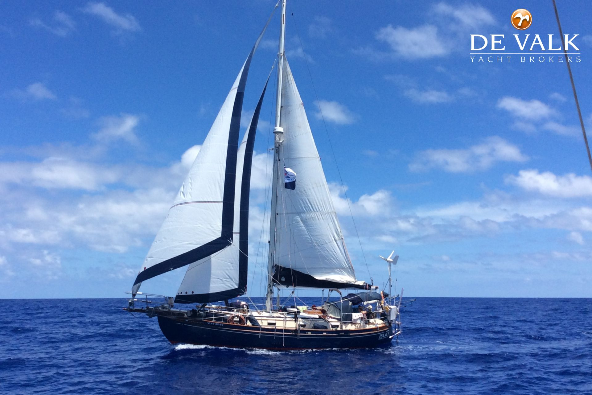

Feature boat
Tayana 37
A timeless bluewater cruiser with legendary balance, sturdy construction, and ocean-proven capability.
36′8″LOA
11′6″Beam
5′8″Draft
22,500 lbDisplacement
Practical knowledge, refined gear, and timeless seamanship for bluewater sailors.
Explore the journey →Classic, capable cruising sailboats built for distance, comfort, and confidence offshore.

Feature boat
A timeless bluewater cruiser with legendary balance, sturdy construction, and ocean-proven capability.
The goal is to build the experience, judgment and systems required for extended offshore sailing—and eventually, a voyage measured in oceans rather than weekends.
This page will document the full process: choosing the right boat, developing seamanship, preparing for offshore conditions and learning from each passage along the way.
The ability to move deliberately, live simply and let curiosity define the next destination.
Competence earned through study, repetition, weather awareness and time on the water.
Building the practical judgment to maintain systems and solve problems far from shore.
Reaching new places slowly enough to understand the distance traveled between them.
Turning a distant ambition into a sequence of practical, testable decisions.
Platform
Skills
Systems
Experience
From idea to open ocean
The route is intentionally flexible. Each stage earns the confidence and information required to take on the next one safely.
Clarify the mission, boat criteria, budget and training path.
Select, survey and prepare a vessel for the intended passages.
Test systems and decision-making through progressively longer trips.
Develop blue-water experience with deliberate route expansion.
Let preparation, conditions and experience shape the voyage ahead.
Field notes coming next
Future entries will cover the boat search, training, equipment choices, passages and lessons that turn preparation into real experience.